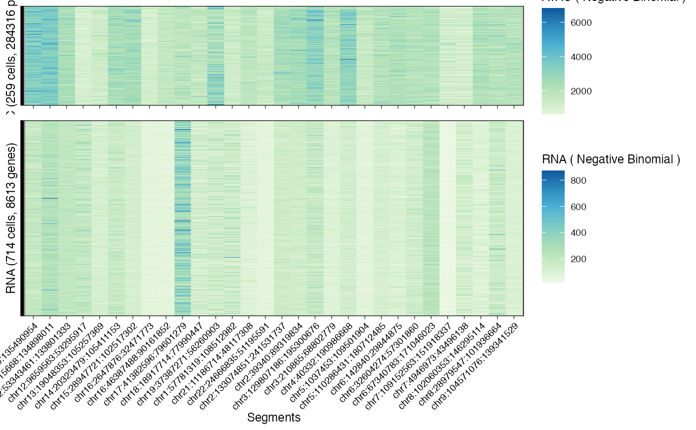

General plotting function for data. This function uses a what parameter
to dispatch visualization to a number of internal functions. For the input data one can visualize:
(what = "histogram") a histogram of input values per segment, per modality;
(what = "lineplot") a lineplot showing, for all cells and modality, all values drawn as segments on a genome-wide plot.
In this case also the input segmentation is visualized;
(what = "heatmap") a heatmap showing, for all cells and modality, all values per segment;
(what = "mapping") a tile plot reporting the number of RNA genes or ATAC peaks associated to each segment.
Where appropriate, input values are normalized by input factors. In some cases (lineplot), they are also scaled by the number of events mapped to each segment - this makes them comparable across segments.
In most cases all the plot functions return one ggplot figure. An exception is made for the
heatmap visualisation when there are more than one modalities: in that case all the generated figures
are assembled into a cowplot figure.
The internal plotting functions can have some parameters in input. Passage of parameters to those functions is done by a top-level ellipsis. The formals of the internal parameters are described in the Plotting vignette of the package, where example runs are shown. Please refer to that to see how to customise input plots.
plot_data(x, what = "histogram", ...)
| x | An object of class |
|---|---|
| what | Any of |
| ... | Parameters forwarded to the internal plotting functions. |
A ggplot or cowplot figure, depending on the number of
modalities and plot required.
# Formals of all internal functions (see package Plotting vignette) formals(Rcongas:::plot_data_histogram) %>% names()#> [1] "x" "segments" "whichfacet"#> [1] "x" "segments" "alpha"#> [1] "x" "segments"#> [1] "x"data("example_object") # Data histogram plot (default all segments) plot_data(example_object, what = 'histogram')#># Subset what to plot # Lineplot segments (default) plot_data(example_object, what = 'lineplot')#> ATAC counts using input normalisation factors.#>#># Data heatmap plot_data(example_object, what = 'heatmap')#> ATAC counts using input normalisation factors.# Events mapping per segment plot_data(example_object, what = 'mapping')